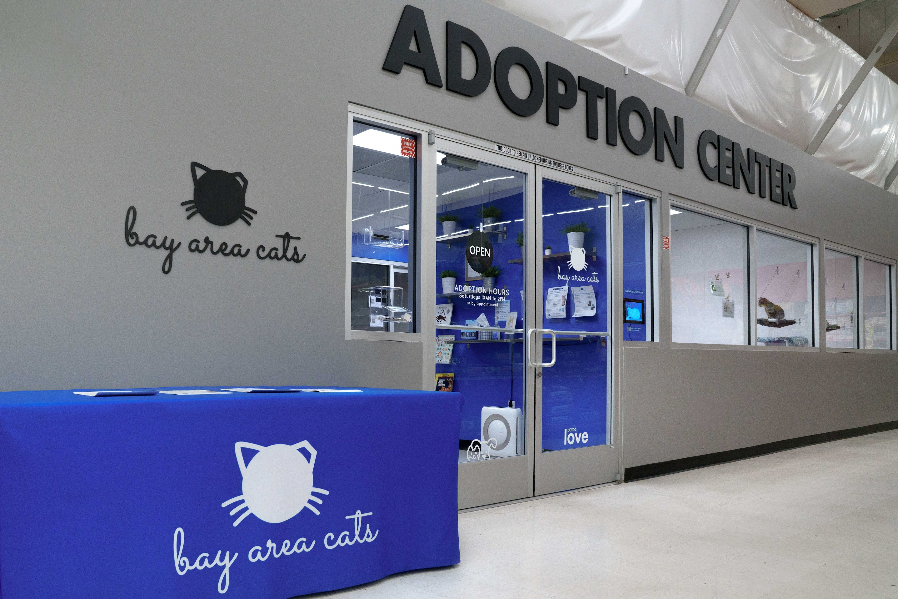
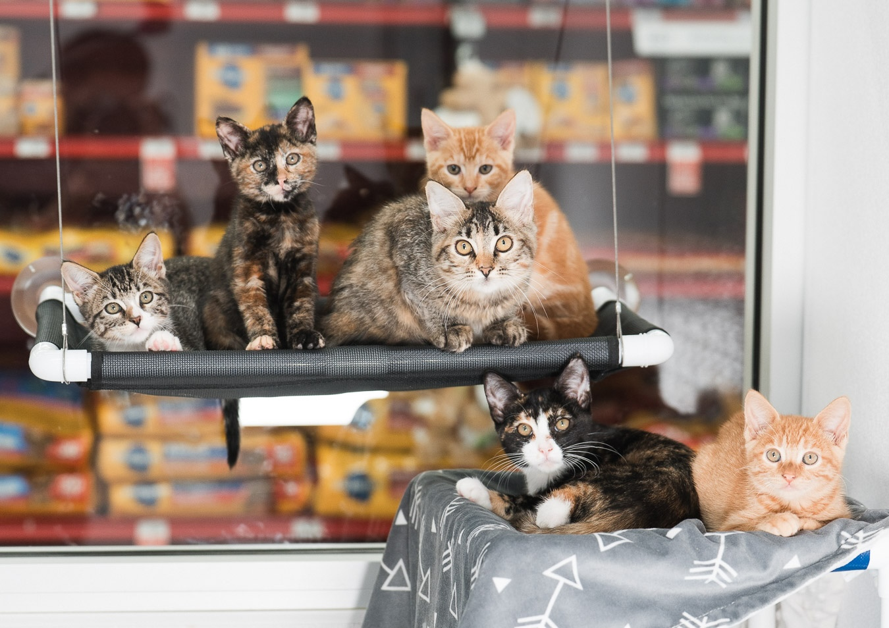

{% assign givebutter_campaign = site.givebutter_campaign_code | default: 'gMYxJ0' %}
{% assign givebutter_url = 'https://givebutter.com/' | append: givebutter_campaign %}

<section id="main" class="wrapper style1">
  <div class="container">
<!-- <h4><i>2530 outdoor cats and 550 pets helped since 2023</i></h4>
<hr class="major" /> -->
    <h3>Support our mission: to decrease the number of unfixed cats in the community</h3>
    <div id="donations" class="home-donation-intro">
      <div class="givebutter-button-wrap">
        <givebutter-button
          id="donate-button-home"
          campaign="{{ givebutter_campaign }}"
          label="Donate to help save lives"
          background-color="#285AA8"
          border-radius="50"
          drop-shadow="true"
          icon="heart"
        ></givebutter-button>
        <a class="donate-button givebutter-fallback" id="donate-button-home-fallback" href="{{ givebutter_url }}" target="_blank" rel="noopener">Donate to help save lives</a>
      </div>
    <script>
    (function() {
      const btn = document.getElementById('donate-button-home');
      if (!btn) return;

      btn.addEventListener('click', function() {
        if (typeof window.gtag === 'function') {
          gtag('event', 'donate_click', {
            event_category: 'donations',
            event_label: 'homepage'
          });
        }
      });
    })();
    </script>
    <p>Bay Area Cats is a 501(c)(3) volunteer-run nonprofit focused on prevention. We provide spay/neuter, trap-neuter-return (TNR), and rescue support to reduce overpopulation.</p>

            <h3>Our programs</h3>
      <p>Fill out our <a href="https://bayareacats.org/contact">contact form</a> with the details of your specific situation. Here's how we can help:</p>
      <ul>
        <li>Feral cats &amp; kittens in Cupertino and Sunnyvale</li>
        <!-- Mom's Last Litter is temporarily paused. Restore this list item when the program reopens.
        <li>Mom's Last Litter: We'll spay mom, & help find homes for the kittens</li>
        -->
        <li>Spaying female pet cats</li>
        <li>Pregnant cats: pet, stray, or trapped pregnant cats in any city in the Bay Area</li>
      </ul>

      	<hr class="major" />

		<div class="row">
			<div class="4u">
				<section class="special box home-link-card">
					<a class="home-link-card-image" href="trapping">
						
					</a>
					<a href="trapping" style="text-decoration:none;color:inherit;">
						<h4>Trapping</h4>
					</a>
					<p>Check out the <a href="trapping">Trapping</a> page for trapping tips and resources.</p>
				</section>
			</div>
			<div class="4u">
				<section class="special box home-link-card">
					<a class="home-link-card-image" href="adoptions">
						
					</a>
					<a href="adoptions" style="text-decoration:none;color:inherit;">
						<h4>Adopt</h4>
					</a>
					<p>Check out our available cats and kittens on our <a href="adoptions">Adoptions</a> page.</p>
				</section>
			</div>
			
			<div class="4u">
				<section class="special box home-link-card">
					<a class="home-link-card-image" href="volunteer">
						
					</a>
					<a href="volunteer" style="text-decoration:none;color:inherit;">
						<h4>Volunteer</h4>
					</a>
					<p>Join our team! Sign up to volunteer at <a href="volunteer">bayareacats.org/volunteer</a>.</p>
				</section>
			</div>
		</div>


          	<!-- Mom's Last Litter is temporarily paused. Restore this divider and section when the program reopens.
          	<hr class="major" />

      <section class="moms-last-litter-layout">
        <div class="moms-last-litter-content">
          <h3>Mom's last litter</h3>
          <p>Our Mom's Last Litter program helps prevent future litters while giving the kittens a safe path to homes!</p>
          <ul>
            <li>Submit <a href="https://bayareacats.org/help">bayareacats.org/help</a> and let us know you want to surrender the kittens through Mom's Last Litter.</li>
            <li>Kittens must be 8-12 weeks old, social, and healthy.</li>
            <li><b>We will spay mom & all cats in the home for free</b>, including vaccines and a microchip.</li>
            <li>Have family or friends interested in adopting? They will get first priority to adopt!</li>
          </ul>
        </div>
        <div class="moms-last-litter-side">
          <section class="special box home-link-card">
            <a class="home-link-card-image" href="https://bayareacats.org/help">
              
            </a>
            <a href="https://bayareacats.org/help" style="text-decoration:none;color:inherit;">
              <h4>Contact</h4>
            </a>
            <p>Submit our <a href="https://bayareacats.org/contact">contact form</a> and we'll be in touch to schedule a spay appointment.</p>
          </section>
        </div>
      </section>
      -->

    <hr class="major" />

      <h3>Our impact</h3>
      {% assign has_impact_stats = false %}
      {% for metric in site.data.impact_stats.metrics %}
        {% if metric.value != nil %}
          {% assign has_impact_stats = true %}
        {% endif %}
      {% endfor %}
      {% if has_impact_stats %}
      <section class="impact-snapshot" aria-label="Impact snapshot">
        <div class="bac-stats impact-stats">
          {% for metric in site.data.impact_stats.metrics %}
            {% if metric.value != nil %}
            <div class="bac-stat">
              <div class="bac-num">{{ metric.value }}</div>
              <div class="bac-label">{{ metric.label }}</div>
            </div>
            {% endif %}
          {% endfor %}
        </div>
        {% if site.data.impact_stats.generatedAt %}
        <p class="impact-updated">Updated from Airtable on {{ site.data.impact_stats.generatedAt | date: "%B %-d, %Y" }}.</p>
        {% endif %}
      </section>
      {% endif %}
      {% assign yearly_chart = site.data.impact_stats.charts.yearlyCatTypes %}
      {% if yearly_chart.years.size > 0 %}
      <section class="impact-chart-shell" aria-labelledby="all-time-impact-title">
        <h2 id="all-time-impact-title">All-Time Impact</h2>
        <div class="impact-chart-card">
          <h3>{{ yearly_chart.title }}</h3>
          <div class="impact-chart-body">
            <div class="impact-y-axis" aria-hidden="true">
              {% for tick in yearly_chart.yAxis %}
              <span>{{ tick.label }}</span>
              {% endfor %}
            </div>
            <div class="impact-plot">
              <div class="impact-grid" aria-hidden="true">
                {% for tick in yearly_chart.yAxis %}
                <span></span>
                {% endfor %}
              </div>
              <div class="impact-bars" style="grid-template-columns: repeat({{ yearly_chart.years.size }}, minmax(5.5rem, 1fr))">
                {% for year in yearly_chart.years %}
                <div class="impact-year">
                  <div class="impact-total-label" style="bottom: calc({{ year.height }}% + 0.35rem)">{{ year.label }}</div>
                  <div class="impact-bar" aria-label="{{ year.year }}: {{ year.total }} cats assisted">
                    <span class="impact-segment impact-segment-pet" style="height: {{ year.segments.pet_spay_neuter.height }}%"></span>
                    <span class="impact-segment impact-segment-rescued" style="height: {{ year.segments.rescued.height }}%"></span>
                    <span class="impact-segment impact-segment-tnr" style="height: {{ year.segments.tnr.height }}%"></span>
                  </div>
                  <div class="impact-year-label">{{ year.year }}</div>
                </div>
                {% endfor %}
              </div>
            </div>
            <div class="impact-legend" aria-label="Cat type legend">
              <h4>Cat Type</h4>
              <div><span class="impact-dot impact-dot-pet"></span>Pet Spay / Neuter</div>
              <div><span class="impact-dot impact-dot-rescued"></span>Rescued</div>
              <div><span class="impact-dot impact-dot-tnr"></span>Trap-Neuter-Return</div>
            </div>
          </div>
        </div>
      </section>
      {% endif %}
	<iframe class="airtable-embed" src="https://airtable.com/embed/appklgrXgkT9hR2Ts/shr4RCpUUqQAJ2wlL" frameborder="0" onmousewheel="" width="100%" height="950" style="background: transparent; border: 1px solid #ccc;"></iframe>


      <hr class="major" />

      <section class="home-highlight-banner">
        <div class="home-highlight-copy">
          <p class="home-highlight-eyebrow">Lost and found support</p>
          <h2>Reunite lost cats with Petco Love Lost</h2>
          <p class="home-highlight-text">If you have found a cat or are searching for one, start with Petco Love Lost's free national photo-matching tool and report the cat to our team so we can help guide next steps locally.</p>
          <div class="home-highlight-actions">
            <a class="button" href="https://petcolove.org/lost/signup/?utm_medium=referral&utm_source=shelter&redirect=lost-report&utm_campaign=lost-lostfound-shelter-1250492" target="_blank" rel="noopener noreferrer">Search Petco Love Lost</a>
            <a class="button alt" href="contact">Contact Bay Area Cats</a>
          </div>
        </div>
        <div class="home-highlight-art">
          <div class="home-highlight-art-frame">
            
          </div>
        </div>
      </section>


 
      <p></p>
    
    </div>
	</div>
</section>

				
			
		
